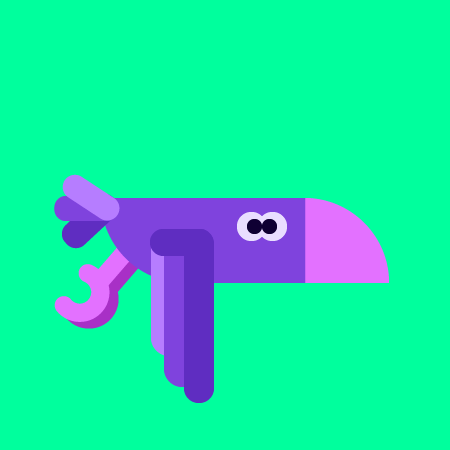
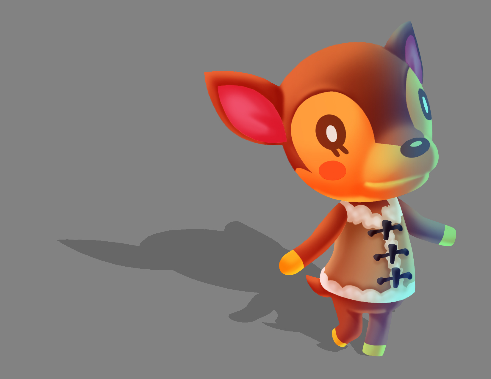
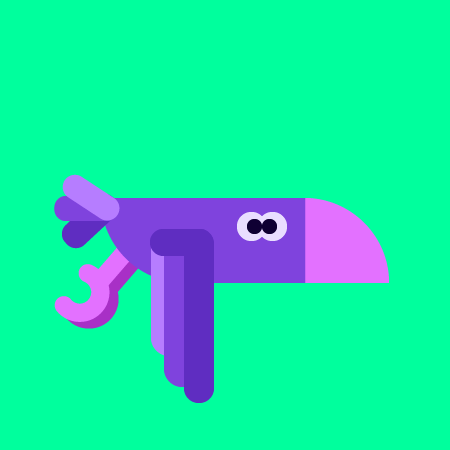
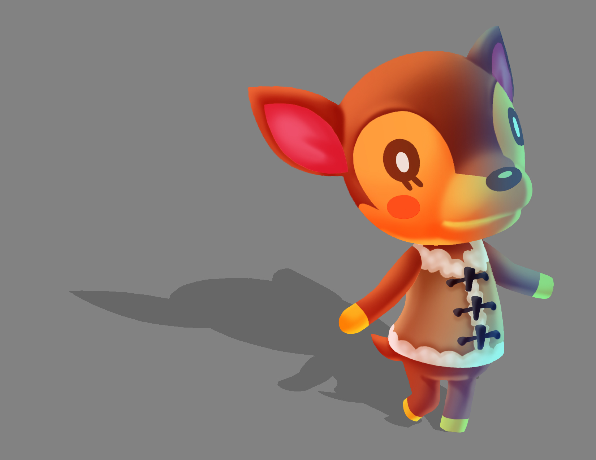

Hello, everyone! My name is Shreya Patel and I am planning on majoring in Digital Media, specifically for Game Designing! My journey is to express my creativity through art and make a career out of it, and I do believe that with Game Designing I can achieve my dreams. Growing up, I've always been someone with a passion for art and ever since then I wanted a future in that field. I have huge experiences with Photoshop and Illustrator where I make digital art of my own characters and their designs, but I do want to use 3-Dimensional softwares like Blender. By being a game designer, I wish to become better at character creation and bringing my art to life through means of technology. I hope to make games like FPS and Souls games since those are the type of games I love to play!


 


